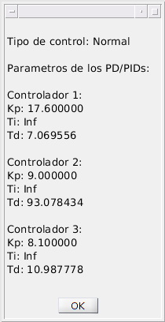

Contents
answer = questdlg('¿Crear nuevo o cargar existente?','Diseño','Nuevo','Cargar','Cargar'); switch answer case 'Cargar' uiopen('load'); % Abre una ventana para selecionar ficheros que se cargaran en el workspace answer = questdlg('¿Desea editarlo?','Diseño','Editar','No','No'); switch answer case 'Editar' while(~strcmp(answer,'No')) % Si no se ha selecionado no se soigue con el bucle answer = questdlg('Seleciona controlador:','Diseño','C1','C2','C3','C3'); switch answer case 'C1' rltool(Gs1,Crl1); fprintf('Presiona una tecla Terminar...\n'); pause(); Crl1 = C; % Crl1 es la variable que alamcena el controlador del eslabon 1 case 'C2' rltool(Gs2,Crl2); fprintf('Presiona una tecla Terminar...\n'); pause(); Crl2 = C; % Crl1 es la variable que alamcena el controlador del eslabon 2 case 'C3' rltool(Gs3,Crl3); fprintf('Presiona una tecla Terminar...\n'); pause(); Crl3 = C; % Crl1 es la variable que alamcena el controlador del eslabon 3 end answer = questdlg('¿Seguir editando?:','Diseño','Si','No','No'); end case 'No' end case 'Nuevo' [tipoControl,reductora,modelo] = GUI() % Abre una interfaz para elegir las opciones de diseño switch modelo case 'realista' load('modeloReal.mat'); % Carga en workspace el modelo real (Ma,Va,Ga) case 'ideal' load('modeloIdeal.mat'); % Carga en workspace el modelo Ideal (Ma,Va,Ga) end switch reductora case 'con' R1 = R(1,1); R2 = R(2,2); R3 = R(3,3); case 'sin' R1 = 1; R2 = 1; R3 = 1; end syms qd1 qd2 qd3 real B1 = diff(V_num(1),qd1); B2 = diff(V_num(2),qd2); B3 = diff(V_num(3),qd3); q1 = 0; q2 = 0; q3 = 0; qd1 = 0; qd2 = 0; qd3 = 0; A1 = eval(M_num(1,1)); A2 = eval(M_num(2,2)); A3 = eval(M_num(3,3)); B1 = eval(B1); B2 = eval(B2); B3 = eval(B3); % Se usa modelo doble integrador switch tipoControl case {'parcalculado'} % Funciones de trasferencia de los tres eslabones Gs1 = tf([1],[1 0 0]) Gs2 = tf([1],[1 0 0]) Gs3 = tf([1],[1 0 0]) case {'precomdinref','precomdinmed'} % Funciones de trasferencia de los tres eslabones Gs1 = tf([Kt(1,1)*R1],[A1 0 0]) Gs2 = tf([Kt(2,2)*R2],[A2 0 0]) Gs3 = tf([Kt(3,3)*R3],[A3 0 0]) otherwise % Funciones de trasferencia de los tres eslabones Gs1 = tf([Kt(1,1)*R1],[A1 B1 0]) Gs2 = tf([Kt(2,2)*R2],[A2 B2 0]) Gs3 = tf([Kt(3,3)*R3],[A3 B3 0]) end switch tipoControl case 'parcalculado' rltool(Gs1); fprintf('Presiona una tecla para terminar...\n'); pause(); Crl1 = C; Crl2 = C; Crl3 = C; otherwise % Root-locus (Calculo de controladores) rltool(Gs1); fprintf('Presiona una tecla para continuar con siguente controlador 2...\n'); pause(); Crl1 = C; rltool(Gs2); fprintf('Presiona una tecla para continuar con siguente controlador 3...\n'); pause(); Crl2 = C; rltool(Gs3); fprintf('Terminado. Press Enter...\n'); pause(); Crl3 = C; end end % Extraemos los parametros de los controladores diseñados [Kp1,Ti1,Td1,N1] = pidstddata(Crl1); [Kp2,Ti2,Td2,N2] = pidstddata(Crl2); [Kp3,Ti3,Td3,N3] = pidstddata(Crl3); % imprimimos por pantalla info sobre los parametros de los controladores fprintf('Parametros del controlador 1:\nKp: %f\nTi: %f\nTd: %f\n\n',Kp1,Ti1,Td1); fprintf('Parametros del controlador 1:\nKp: %f\nTi: %f\nTd: %f\n\n',Kp2,Ti2,Td2); fprintf('Parametros del controlador 1:\nKp: %f\nTi: %f\nTd: %f\n\n',Kp3,Ti3,Td3);
Parametros del controlador 1: Kp: 2957.256933 Ti: 0.135135 Td: 0.033784 Parametros del controlador 1: Kp: 2957.256933 Ti: 0.135135 Td: 0.033784 Parametros del controlador 1: Kp: 2957.256933 Ti: 0.135135 Td: 0.033784
Generacion del codigo del controlador
Generamos un codigo u otro en funcion del controlador que hayamos elegido Creamos un archivo que sera la funcion del controlador
file = fopen( 'Controller.m', 'wt' ); code = ['function senalControl = Controller(in)\n\n'... 'qr = [in(1); in(2); in(3)];\n'... 'q = [in(4); in(5); in(6)];\n'... 'qpr = [in(7); in(8); in(9)];\n'... 'qp = [in(10); in(11); in(12)];\n'... 'qppr = [in(13); in(14); in(15)];\n\n'... 't = in(16);\n\n']; fprintf(file,code); switch tipoControl case {'precompmed','precomdinmed','parcalculado'} % Son los que usan medidas fprintf(file,'q1 = q(1); q2 = q(2); q3 = q(3);\n'); fprintf(file,'qd1 = qp(1); qd2 = qp(2); qd3 = qp(3);\n\n'); case {'precompref','precomdinref'} % Son los que usan referencias fprintf(file,'q1 = qr(1); q2 = qr(2); q3 = qr(3);\n'); fprintf(file,'qd1 = qp(1); qd2 = qp(2); qd3 = qp(3);\n\n'); end switch tipoControl case {'parcalculado','precomdinref','precomdinmed'} fprintf(file,'Ma = [%s %s %s;\n%s %s %s;\n%s %s %s];\n\n', ... char(M_num(1,1)),char(M_num(1,2)),char(M_num(1,3)), ... char(M_num(2,1)),char(M_num(2,2)),char(M_num(2,3)), ... char(M_num(3,1)),char(M_num(3,2)),char(M_num(3,3))); fprintf(file,'Ca = [%s;\n%s;\n%s];\n\n',char(V_num(1)),char(V_num(2)),char(V_num(3))); fprintf(file,'Ga = [%s;\n%s;\n%s];\n\n',char(G_num(1)),char(G_num(2)),char(G_num(3))); case {'precompmed','precompref'} fprintf(file,'Ga = [%s;\n%s;\n%s];\n\n',char(G_num(1)),char(G_num(2)),char(G_num(3))); end % Definimos los parametros de los controladores fprintf(file,'Kp = diag([%f\t%f\t%f]);\n',Kp1,Kp2,Kp3); fprintf(file,'Ki = diag([Kp(1,1)/%f\tKp(2,2)/%f\tKp(3,3)/%f]);\n',Ti1,Ti2,Ti3); fprintf(file,'Kd = diag([Kp(1,1)*%f\tKp(2,2)*%f\tKp(3,3)*%f]);\n\n',Td1,Td2,Td3); code = ['persistent ek_i ek_1\n' ... 'Ts = 0.001;\n' ... '%% Errores a cero\n' ... 'if(t<1e-8)\n' ... ' ek_i = [0;0;0]; %% Error integral\n' ... ' ek_1 = [0;0;0]; %% Error intante k-1\n' ... ' senalControl = [0;0;0];\n' ... 'else\n\n' ... '%% Calculo de errores proporcional (Parte proporcional)\n' ... 'ek = qr-q;\n\n' ... '%% Calculo del error derivativo (Parte derivativa)\n' ... 'epk = qpr-qp;\n\n' ... '%% Calculo del error integral (Parte integral) (Metodo trapezoidal)\n' ... 'ek_i = ek_i + (Ts/2)*(ek+ek_1);\n\n' ... '%% Cálculo de la señal de control incremental generada por el controlador C(z)\n']; fprintf(file,code); switch tipoControl case {'precompref','precompmed'} fprintf(file,'Imk = Kp*ek + Kd*epk + Ki*ek_i + Ga;\n\n'); case {'precomdinref','precomdinmed'} fprintf(file,'Imk = Kp*ek + Kd*epk + Ki*ek_i + Ma*qppr + Ca + Ga;\n\n'); case 'parcalculado' fprintf(file,'Imk = Ma*(qppr + (Kp*ek + Kd*epk + Ki*ek_i)) + Ca + Ga;\n\n'); case 'normal' fprintf(file,'Imk = Kp*ek + Kd*epk + Ki*ek_i;\n\n'); end code = ['%% Actualizamos error del instante k-1\n' ... 'ek_1 = ek;\n\n' ... 'senalControl = Imk;\n' ... 'disp(t);\n' ... 'end']; fprintf(file,code); fclose(file); fprintf('Controladora generada\n'); % Mostramos en una ventana un resumen del diseño switch(tipoControl) case 'precompmed' tipo = sprintf('Precompensacion con medidas'); case 'precompref' tipo = sprintf('Precompensacion con referencias'); case 'precomdinmed' tipo = sprintf('Precompensacion dinamica con medidas'); case 'precomdinref' tipo = sprintf('Precompensacion dinamica con medidas'); case 'parcalculado' tipo = sprintf('Par Calculado'); case 'normal' tipo = sprintf('Normal'); end msg = sprintf(['Tipo de control: %s\n\nParametros de los PD/PIDs:\n\n'... 'Controlador 1:\nKp: %f\nTi: %f\nTd: %f\n\n' ... 'Controlador 2:\nKp: %f\nTi: %f\nTd: %f\n\n' ... 'Controlador 3:\nKp: %f\nTi: %f\nTd: %f\n'],tipo,Kp1,Ti1,Td1,Kp2,Ti2,Td2,Kp3,Ti3,Td3); msgbox(msg);
Controladora generada